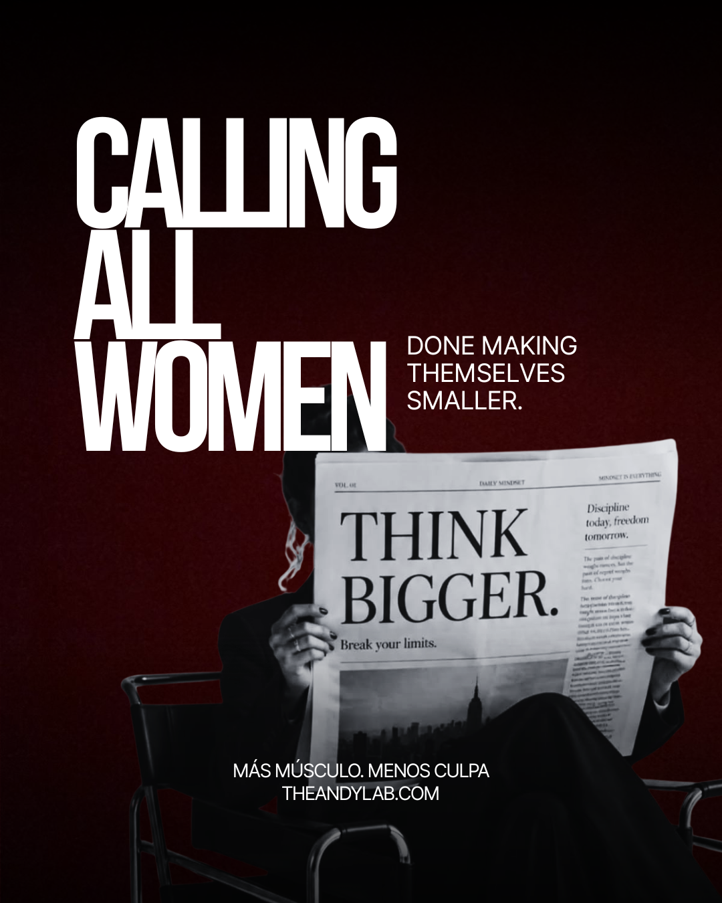
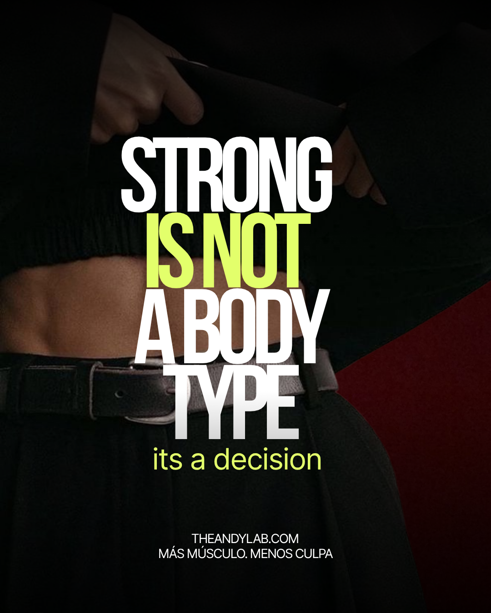
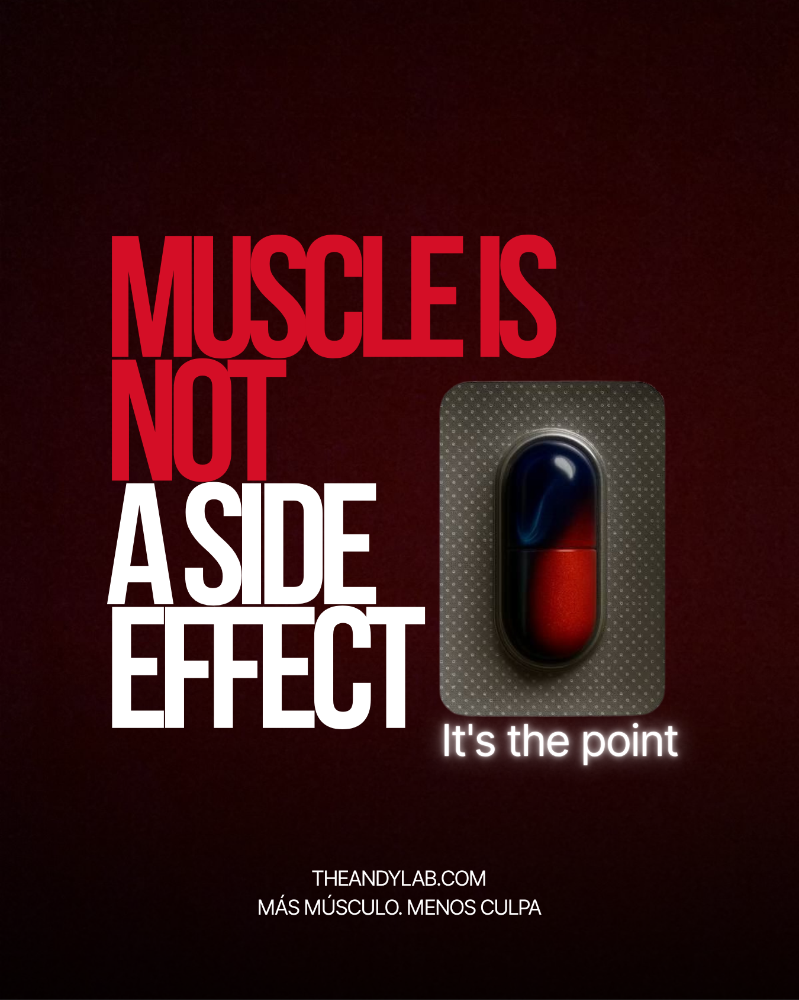
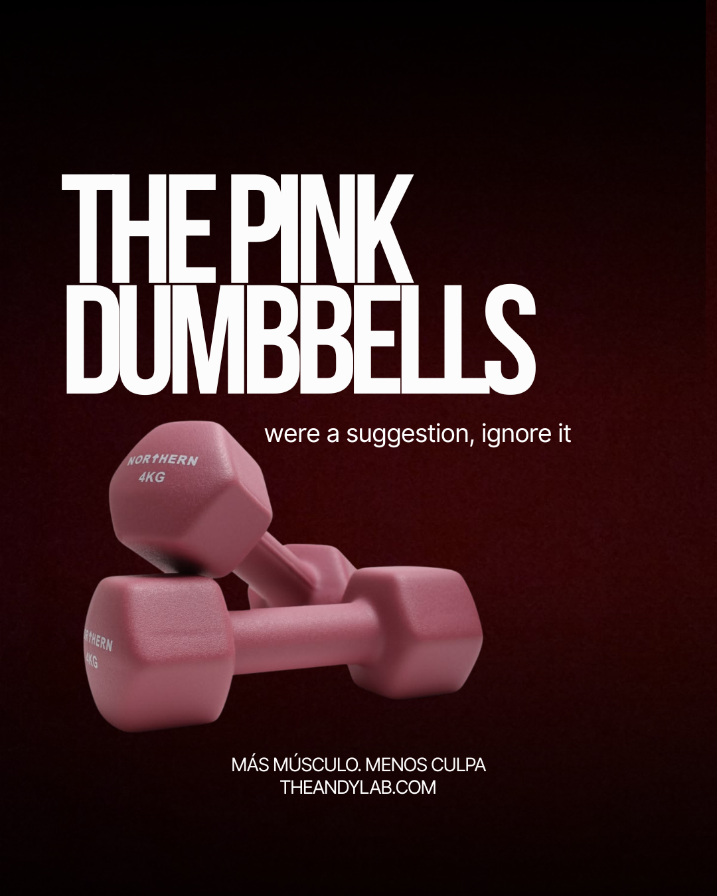
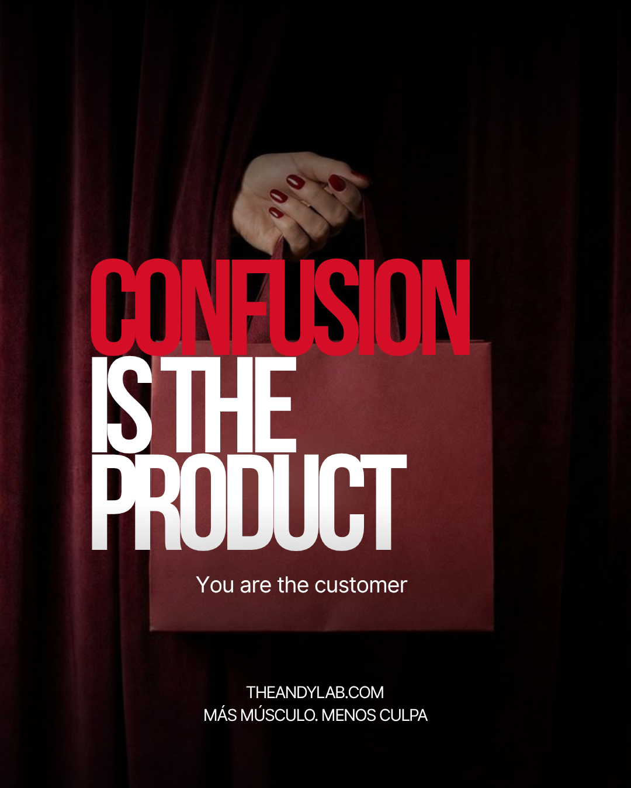
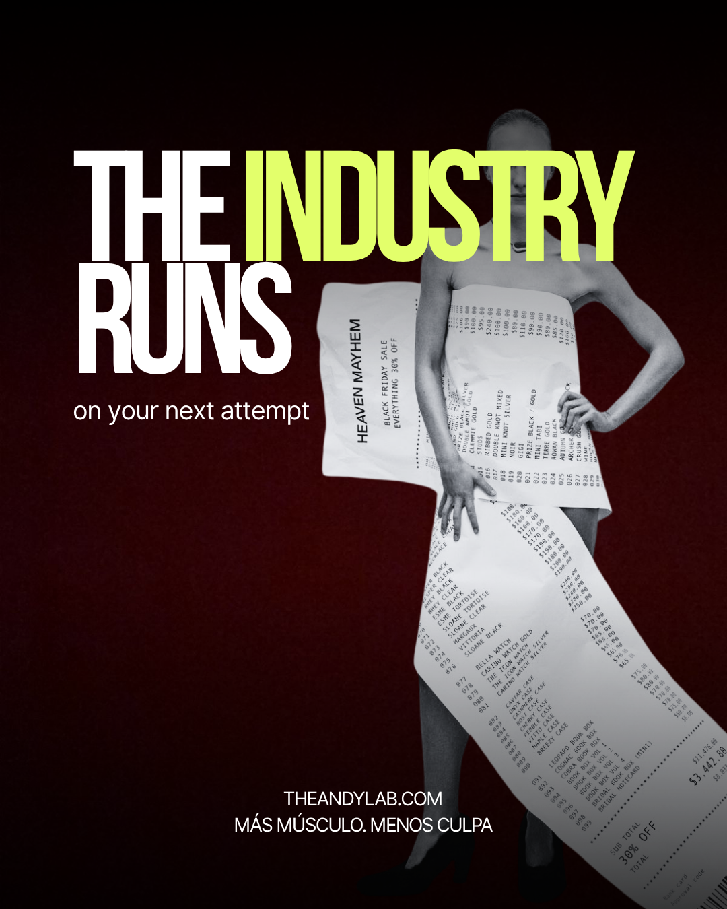
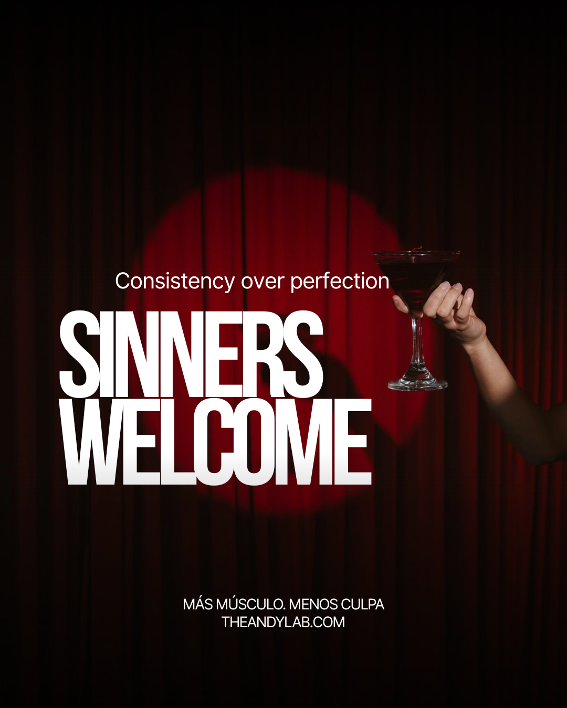

No te lo cuento. Te lo enseño. Siete principios sobre los que está construido todo lo que hago.
I don't tell you. I show you. Seven principles everything I do is built on.
Más músculo. Menos culpa.Llevas años encogiéndote — comiendo menos, ocupando menos, pidiendo menos. Esto es lo contrario: más fuerza, más espacio, más presencia. Empieza por decidir que mereces ocupar tu lugar.
You've spent years shrinking — eating less, taking up less, asking for less. This is the opposite: more strength, more space, more presence. It starts with deciding you deserve to take up room.

No naciste para ser fuerte o no. La fuerza no es genética ni suerte — es una decisión que tomas y vuelves a tomar cada semana. El cuerpo es algo que construyes, no una sentencia que aceptar.
You weren't born strong or not. Strength isn't genetics or luck — it's a decision you make and remake every week. Your body is something you build, not a verdict to accept.

No es lo que pasa por accidente mientras persigues estar delgada. Es el objetivo. El músculo es lo que te hace fuerte, capaz y libre — dentro del gym y fuera de él. Lo ponemos en el centro.
It's not what happens by accident while you chase being thin. It's the point. Muscle is what makes you strong, capable and free — inside the gym and out. We put it at the center.

Te dijeron que levantaras ligero para no «ponerte grande». Era mentira. No vas a crecer sin querer. No vas a construir músculo sin intención. Levanta la barra.
They told you to lift light so you wouldn't “get bulky.” It was a lie. You won't grow by accident. You won't build muscle without intention. Lift the bar.

La industria gana cuando no entiendes nada. Mil cuentas, mil dietas, mil opiniones — diseñadas para mantenerte comprando, no para hacerte fuerte. Yo trabajo al revés: claridad y evidencia.
The industry wins when you understand nothing. A thousand accounts, a thousand diets, a thousand opinions — built to keep you buying, not to make you strong. I work the other way: clarity and evidence.

Su negocio no es que lo logres — es que vuelvas a empezar. Cada reinicio, cada plan nuevo, cada enero. Un sistema que funciona te saca de ese ciclo para siempre. Eso es lo que construimos.
Their business isn't your success — it's your restart. Every reset, every new plan, every January. A system that works gets you out of that loop for good. That's what we build.

No necesitas comer perfecto. No necesitas no fallar nunca. La copa de vino no arruina nada. Lo que construye músculo es volver — otra vez, y otra. Aquí las pecadoras son bienvenidas.
You don't need to eat perfectly. You don't need to never slip. The glass of wine ruins nothing. What builds muscle is coming back — again, and again. Here, sinners are welcome.

Si esto suena a ti, el Lab es para ti.
If this sounds like you, the Lab is for you.